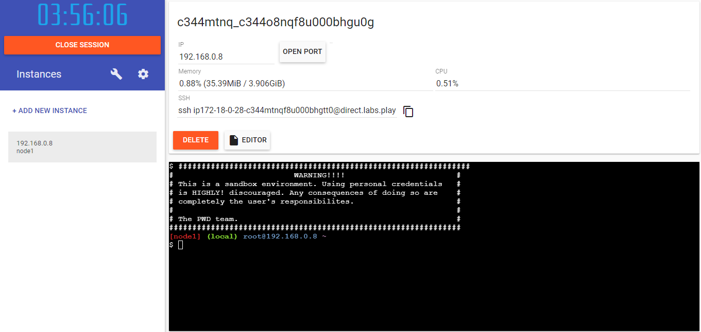
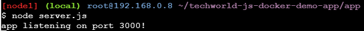

What you'll learn?
- Build a docker image and run as a container
- Register the docker image on AWS ECR
- Deploy the docker image on AWS EKS
- Techstack: NodeJS app, MongoDB, Docker, AWS ECR, and AWS EKS
Why is this important?
- Continuous integration and deployment (CI/CD) is an important skill in MLOps
How it will work?
- Use a pre-built nodeJS which is using MongoDB for data storage, pull this app from a git repo
- Pull mongodb and mongodb-express images docker images from docker hub
- Build the app's docker image
- Write a docker compose file that will stitch all these docker images together
- Run the docker compose locally to verify that everything is working fine
- Signup/Login to AWS and configure the AWS CLI
- Push the docker compose to AWS's ECR - AWS's container registry portal
- Use AWS's EKS to run the docker
Who is this for?
- People who are new in MLOps
- People looking to strengthen their MLOps CI/CD skills
We will use Play with docker for this tutorial.
Sign-in
Go to this link and login. The landing page will look like this:
Create an instance
Click on ADD NEW INSTANCE. After clicking, it will look like this:

You are ready to run the dockers in a free cloud environment!
Note: to paste the command in PWD, use ctrl+shift+v.
First we will develop our ML model which we want to deploy and serve. It can be as simple as a popularity based item recommendation model. In this tutorial, we are going to use a simple pre-built nodejs app, so that we can keep our focus on MLOps part.
Clone the app repository
git clone https://gitlab.com/nanuchi/techworld-js-docker-demo-app.git

Explore
Explore the HTML webpage front-end file./app/index.html, and the Node JS back-end file ./app/server.js
Install NodeJS
apk add --update nodejs npmnpm install express
Start the app
Start by running Node JS server: node server.js.

In PWD, we have to open port to access the site. Click on OPEN PORT and enter 3000.

A new window will pop-up which will look like this:

This step is just for understanding. You don't need to run the commands.
Image pulling
- Pull mongoDB docker image:
docker pull mongo - Pull mongoDB express:
docker pull mongo-express
What is docker network
What is Dockerfile
Create docker network
docker network create mongo-network
Start the mongodb container
docker run -d \
-p 27017:27017 \
-e MONGO_INITDB_ROOT_USERNAME=admin \
-e MONGO_INITDB_ROOT_PASSWORD=password \
--name mongodb \
--net mongo-network \
mongo
Start the mongodb express container
docker run -d \
-p 8081:8081 \
-e ME_CONFIG_MONGODB_ADMINUSERNAME=admin \
-e ME_CONFIG_MONGODB_ADMINPASSWORD=password \
-e ME_CONFIG_MONGODB_SERVER=mongodb \
--name mongo-express \
--net mongo-network \
mongo-express
Listing down the docker images
Listing down the docker containers

What is docker volume?


Explore Dockerfile
FROM node:13-alpine
ENV MONGO_DB_USERNAME=admin \
MONGO_DB_PWD=password
RUN mkdir -p /home/app
COPY ./app /home/app
# set default dir so that next commands executes in /home/app dir
WORKDIR /home/app
# will execute npm install in /home/app because of WORKDIR
RUN npm install
# no need for /home/app/server.js because of WORKDIR
CMD ["node", "server.js"]

Explore docker compose file
docker-compose-yaml
version: '3'
services:
# my-app:
# image: ${docker-registry}/my-app:1.0
# ports:
# - 3000:3000
mongodb:
image: mongo
ports:
- 27017:27017
environment:
- MONGO_INITDB_ROOT_USERNAME=admin
- MONGO_INITDB_ROOT_PASSWORD=password
volumes:
- mongo-data:/data/db
mongo-express:
image: mongo-express
ports:
- 8080:8081
environment:
- ME_CONFIG_MONGODB_ADMINUSERNAME=admin
- ME_CONFIG_MONGODB_ADMINPASSWORD=password
- ME_CONFIG_MONGODB_SERVER=mongodb
volumes:
mongo-data:
driver: local
Start containers with docker compose
Go back to the main directory. Make sure you see something like this:

Run the docker compose using this command: docker-compose up
This will start both containers with a single command and also takes care of creating a common network. We will simulate what Jenkins will do later in CI stage. We will compose a NodeJS docker image. We are gonna need a docker file for that.
Build the docker image
docker build -t my-app:1.0 .
Run the container to verify
docker run my-app:1.0
Data input in node JS and saved in mongoDB.


Create private docker repository on AWS
Analyze the ECR push commands
Configure AWS CLI and Credentials and AWS push commands
Run a dry cycle
Lets run a dry cycle. We will modify server.js a little bit and then build the docker image with version 1.1 this time. Now tag it and push to AWS ECR.
Add docker image and re-run
We will now add our image in docker compose and trigger the
version: '3'
services:
my-app:
image: ${docker-registry}/my-app:1.0
ports:
- 3000:3000
mongodb:
image: mongo
ports:
- 27017:27017
environment:
- MONGO_INITDB_ROOT_USERNAME=admin
- MONGO_INITDB_ROOT_PASSWORD=password
volumes:
- mongo-data:/data/db
mongo-express:
image: mongo-express
ports:
- 8080:8081
environment:
- ME_CONFIG_MONGODB_ADMINUSERNAME=admin
- ME_CONFIG_MONGODB_ADMINPASSWORD=password
- ME_CONFIG_MONGODB_SERVER=mongodb
volumes:
mongo-data:
driver: local
Congratulations!
What we've covered
Successfully created and deployed our app as a docker container on cloud.
Next steps
- Analyze the role of this in the overall MLOps process
- Explore other options for registration and deployment
- Use Jenkins for robust CI/CD pipeline instead of manually building the images
Links and References
- Deploying docker app using Jenkins pipeline | CI/CD Of Docker | DevOps - Jenkins Pipeline Tutorial
- Developing with Docker - Docker in Practice || Docker Tutorial 8
- Docker Compose Tutorial - Docker in Practice || Docker Tutorial 9
- Docker Compose Tutorial - Docker in Practice || Docker Tutorial 10
- Docker Compose Tutorial - Docker in Practice || Docker Tutorial 11
- Docker Compose Tutorial - Docker in Practice || Docker Tutorial 12
- Docker Compose Tutorial - Docker in Practice || Docker Tutorial 13